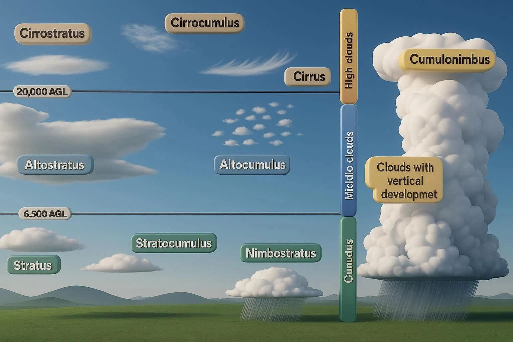

Cloud classification by altitude and attitude — answer the questions below to test your knowledge.
Cloud Chart Reference
Visual classification by altitude

Cloud Classification Overview
By Altitude & Attitude
Four major cloud categories
Low-Level Clouds — Surface to 6,500 ft AGL Mid-Level Clouds — 6,500 to 20,000 ft AGL High-Level Clouds — Above 20,000 ft AGL Clouds With Vertical Development
Low-Level Clouds
Surface to 6,500 ft AGL
Composition & behavior
Mostly made of water droplets, sometimes supercooled. These clouds can cause icing — bad news for pilots. Low clouds reduce visibility, create low ceilings, and shift rapidly, often grounding VFR flights.
Examples
Stratus, Stratocumulus, Nimbostratus
Impact on operations
Poor visibility, potential icing, low ceilings
Mid-Level Clouds
6,500 to 20,000 ft AGL
Composition & behavior
Formed from water droplets, ice crystals, or both — including supercooled water. These clouds can signal shifting weather patterns and moderate turbulence.
Examples
Altostratus, Altocumulus
Impact on operations
Light icing and turbulence, weather transitions
High-Level Clouds
Above 20,000 ft AGL
Composition & behavior
Formed in stable air, composed of ice crystals. Typically bring calm skies and pose little threat.
Examples
Cirrus, Cirrostratus, Cirrocumulus
Impact on operations
No turbulence or icing — great for scenic flights
Clouds With Vertical Development
Low/Mid-level base · Extends to high altitudes
Behavior
Starting from low or mid-levels and rising sky-high. They build upward due to atmospheric instability — the higher they go, the more dramatic the weather.
Towering Cumulus
Early signs of turbulence and instability
Cumulonimbus
The powerhouses of hazardous weather — thunderstorms, lightning, hail, tornadoes, wind shear, and severe turbulence
Questions
14 questions · Click each to reveal the answer
1. What is the temperature/dew point spread at DAL on the 1153z?
The spread is 0
2. For a flight landing at 1238z what is the ceiling indicated in the METAR?
Overcast 300'
3. Is an alternate required for an arrival to DAL at 13z?
Yes. The visibility is below 3SM and ceiling is forecast below 2000'
4. What weather conditions can be expected for a flight arriving at 13z?
Variable direction winds up to 3 knots with 2SM visibility, mist, and a ceiling of 300'. Temporary conditions of 1/2SM, fog and an overcast ceiling of 200' is possible
5. Which ATIS is currently in effect?
ATIS INFO J (Juliet)
6. What arrival runway(s) are being utilized for DAL?
According to the ATIS at 1404z they are utilizing 13L and 13R
7. What is the reported RVR for runway 13L?
6000 on touchdown and 6000 on rollout
8. What is the visibility reported in the DFW METAR at 1253z?
1/2SM
9. Is the above value tower or surface?
Tower. The surface visibility is reported in the remarks section
10. What is the reported RVR for DFW runway 17C?
Greater than 6000 ft shown in the METAR. And 6000 for TD/MP/RO as shown in the RVR monitor
11. For an arrival to DFW at 13z, what is/are the forecast visibilities?
4SM with a temporary condition of 1SM. Note how the actual doesn't match the forecast. Actual is 1/2SM and forecast shows the lowest as 1SM.
12. Is the NWS expecting the low IFR conditions to improve in the Dallas area?
Yes, the forecast discussion is expecting conditions to gradually improve mid to late morning
13. Does the NWS have low, medium, or high confidence for thunderstorms in the DFW area?
The forecast discussion indicates a low confidence in TS impacting the DFW area
14. Based on an arrival to DAL at 14z, what is the likelihood of diversion? Low, medium, high?
Low. Arrival minimums are equal or greater than chart minimums. An alternate and some level of DISP ADD are appropriate for unexpected worsening of conditions.